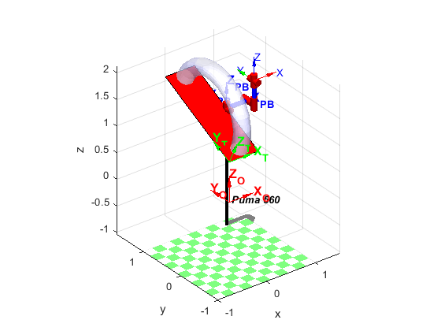
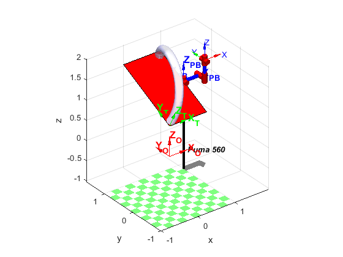
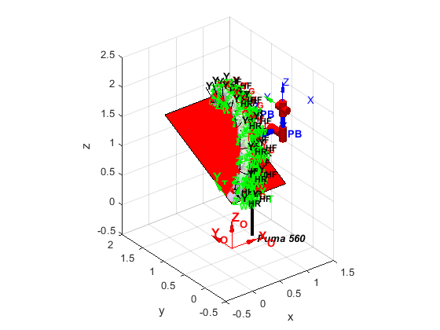

Contents
Sketching the enviroment of the robotics work cell.
%Clean variables and closing windows clc; clear; close all; %Some Important Information load('Data_groove_weld_fv_torus.mat') % This is some data you can use tableDim = [1 1.8]; %Table dimensions tableHeight = 0.75; %Table height tableAlfa = pi/7; %Table rotation (20º) radiusExtTorus = 0.90; diamExtTorus = radiusExtTorus*2; diamTube = 0.2; radiusTube = diamTube/2; amplitudToro = 0.8; weigthExtTorus = amplitudToro+diamTube; numHoles = 8; drillHoleRadius = 0.010; numTurns = 8; WeldPointPerTurn = 8; %Main reference frames. FO = eye(4); HO=trplot(FO, ... % Plot frame T at the origin 'frame', 'O', ... 'color', 'R',... 'text_opts', {'FontSize', 12, 'FontWeight', 'bold'},... 'length',0.5,... 'arrow',... 'width', 1.2); hold on; FT = transl(0,0,tableHeight)*trotx(tableAlfa); HT=trplot(FT, ... % Plot frame T at the origin 'frame', 'T', ... 'color', 'G',... 'text_opts', {'FontSize', 12, 'FontWeight', 'bold'},... 'length',0.5,... 'arrow',... 'width', 1.2); hold on; FPB = transl(tableDim(1),cos(tableAlfa)*tableDim(2)/2,(sin(tableAlfa)*tableDim(2)/2)+tableHeight); HPB=trplot(FPB, ... % Plot frame PB at the origin 'frame', 'PB', ... 'color', 'B',... 'text_opts', {'FontSize', 12, 'FontWeight', 'bold'},... 'length',0.5,... 'arrow',... 'width', 1.2); hold on; %Plot the robot Puma mdl_puma560; p560.base = FPB; p560.plot(qz); hold on; axis([-0.5 1.5 -0.5 2 -0.5 2.5]);
Draw the working table and the torus in working position.
%Drawing the Table coordX = tableDim(1); %Max point on X coordinates of the table coordY = cos(tableAlfa)*tableDim(2); %Max point on Y coordinates of the table coordZ = sin(tableAlfa)*tableDim(2); %Max point on Z coordinates of the table xlabel('x'); ylabel('y'); zlabel('z'); fill3([0 coordX coordX 0],[0 0 coordY coordY],[0 0 coordZ coordZ]+tableHeight,'r'); %Drawing the Torus fv=stlread('Toro_Robotica.stl');% fv is a struct with faces and vertices %Rotate to get it facing up fv.vertices=fv.vertices*rotx(pi/2); %Translating the torus to [0,0,0] mi=min(fv.vertices); fv.vertices=fv.vertices-mi; %Taking the bounding box of the torus ma=max(fv.vertices); mi=min(fv.vertices); dmami=ma-mi; %Positioning and posing the torus fv.vertices=(fv.vertices)*rotz(-pi/2)*rotx(-tableAlfa); fv.vertices=fv.vertices+[diamTube+amplitudToro+(tableDim(1)-diamTube-amplitudToro)/2 0 tableHeight]; SS=patch(fv,... 'FaceColor', [0.8 0.8 1.0], ... 'EdgeColor', 'none', ... 'FaceLighting', 'gouraud', ... 'AmbientStrength', 0.15); % Add a camera light, and tone down the specular highlighting camlight('headlight'); material('dull'); alpha (SS,0.7); % Fix the axes scaling, and set a nice view angle %axis 'equal' axis([-0.5 1.5 -0.5 2 -0.5 2.5]); axis 'equal'; % Give diferent points of view of the scenary: Top, Front, Lateral and isometrics view.
Working points.
Give here your code to get the variables to locate: a) The reference frame for all drills holes, such that z-axis is orthogonal to the surface of the torus and the x-axis is in the direction of minimun curvature. Draw in scale the frames
for i=0:numHoles-1 PoseTool = trotx(pi/2)*troty(pi/2)*trotx(pi+pi/10)*trotz(pi/2); Drill1_Pose(:,:,i+1) = FPB*trotx((-pi/numHoles)*0.5)*transl((amplitudToro/numHoles)*0.5,0,0)*trotx(tableAlfa)*trotx(-pi*i/numHoles)*transl(amplitudToro*i/numHoles,0,0)*transl(-tableDim(1)+diamTube,-radiusExtTorus+radiusTube,0)*PoseTool; HH1=trplot(Drill1_Pose(:,:,i+1), ... % Plot frame PB at the origin 'frame', 'HF', ... 'color', 'K',... 'text_opts', {'FontSize', 10, 'FontWeight', 'bold'},... 'length', 0.2,... 'arrow',... 'width', 0.35); hold on; end coor_circle=transl(Drill1_Pose)'; scatter3(coor_circle(1,:),coor_circle(2,:),coor_circle(3,:),2,'r','LineWidth',5) hold on; axis([-0.5 3 -0.5 3 -0.5 3]); for i=0:numHoles-1 %troty(pi*i/numHoles) %Drill2_Pose(:,:,i+1) = FPB*trotx(tableAlfa)*trotx((-pi/numHoles)/2)*trotx(-pi*i/numHoles)*transl([-amplitudToro-diamTube+(tableDim(1)-diamTube-amplitudToro)/2 -radiusExtTorus+radiusTube 0])*troty(-pi/2)*trotx(pi); %FCT = FPB*transl(-(amplitudToro+diamTube)/2, 0, 0)*trotx(tableAlfa)*troty(pi*i/numHoles)*trotx(pi*i/numHoles)*transl(-radiusTube, 0, amplitudToro)*trotz(pi/2-pi/10)*trotx(pi); %Drill2_Pose(:,:,i+1) = FCT; %*trotx(tableAlfa)*transl(-weigthExtTorus/2, -amplitudToro, 0)*troty(pi/10); %FPB*trotx(tableAlfa)*trotx((-pi/numHoles)/2)*transl(-(amplitudToro+diamTube*2)/2, 0, amplitudToro)*trotz(-pi/2-0.3)*trotx(-pi/2); PoseTool = trotx(pi/2)*troty(pi/2)*trotx(pi/10)*trotz(pi/2); %Drill2_Pose(:,:,i+1) = PoseTool; Drill2_Pose(:,:,i+1) = FPB*trotx((-pi/numHoles)*0.5)*transl((amplitudToro/numHoles)*0.5,0,0)*trotx(tableAlfa)*trotx(-pi*i/numHoles)*transl(amplitudToro*i/numHoles,0,0)*transl(-tableDim(1),-radiusExtTorus+radiusTube,0)*PoseTool; HH2=trplot(Drill2_Pose(:,:,i+1), ... % Plot frame PB at the origin 'frame', 'HR', ... 'color', 'K',... 'text_opts', {'FontSize', 10, 'FontWeight', 'bold'},... 'length', 0.2,... 'arrow',... 'width', 0.35); hold on; axis([-0.5 1.5 -0.5 2 -0.5 2.5]); end coor_circle=transl(Drill2_Pose)'; scatter3(coor_circle(1,:),coor_circle(2,:),coor_circle(3,:),2,'r','LineWidth',5) hold on; axis([-0.5 1.5 -0.5 2 -0.5 2.5]); % b) Repeat the obove operation for the center of the milling groove. Draw % this frames. for i=0:numHoles-1 PoseTool = trotx(pi/2)*troty(pi/2)*trotx(pi/10)*trotz(pi/2)*trotx(pi/2); Groove_Pose(:,:,i+1) = FPB*trotx((-pi/numHoles)*0.5)*transl((amplitudToro/numHoles)*0.5,0,0)*trotx(tableAlfa)*trotx(-pi*i/numHoles)*transl(amplitudToro*i/numHoles,0,0)*transl(-tableDim(1)+radiusTube,-radiusExtTorus,0)*PoseTool; HG=trplot(Groove_Pose(:,:,i+1), ... % Plot frame PB at the origin 'frame', 'G', ... 'color', 'R',... 'text_opts', {'FontSize', 10, 'FontWeight', 'bold'},... 'length', 0.2,... 'arrow',... 'width', 0.35); hold on; axis([-0.5 1.5 -0.5 2 -0.5 2.5]); Groove_Scaled = Groove/1000; Groove_Scaled(4,:,:) = 1; Groove_Scaled(2,:,:) = Groove_Scaled(2,:,:)-min(Groove_Scaled(2,:,:)); ma = max(Groove_Scaled(2,:)); mi = min(Groove_Scaled(2,:)); Groove_Scaled = Groove_Pose(:,:,i+1)*transl(+(ma-mi)/2,0,0)*trotz(pi/2)*Groove_Scaled; plot3(Groove_Scaled(1,:),Groove_Scaled(2,:),Groove_Scaled(3,:),'G') % plotting the Groove axis 'equal'; end % c) The reference frames for all welding points, such that z-axis of the tool % is orthogonal to the surface of the torus and the x-axis is in the direction of % spiral trajectory. Draw in scale the frames for i=0:numTurns-1 PoseTool = trotx(pi/2)*troty(pi/2)*trotx(pi/10)*trotz(pi/2)*trotx(pi/2); for j=0:WeldPointPerTurn-1 INI = FPB*trotx(-pi*i/numHoles - pi*j/(numHoles*WeldPointPerTurn) + tableAlfa)*transl((amplitudToro*i/numHoles) + (amplitudToro*j/(numHoles*WeldPointPerTurn)),0,0)*transl(-tableDim(1)+radiusTube,-radiusExtTorus+radiusTube,0)*PoseTool; Welding_points(:,:,(i+1)*WeldPointPerTurn+(j+1)) = INI*trotx(2*pi*j/WeldPointPerTurn+pi/2)*transl(0,-radiusTube,0); HW=trplot(Welding_points(:,:,(i+1)*WeldPointPerTurn+(j+1)), ... % Plot frame PB at the origin 'frame', 'W', ... 'color', 'G',... 'text_opts', {'FontSize', 10, 'FontWeight', 'bold'},... 'length', 0.1,... 'arrow',... 'width', 0.1); hold on; axis([-0.5 1.5 -0.5 2 -0.5 2.5]); end end %plot3(Weld_points(1,:),Weld_points(2,:),Weld_points(3,:),'g','LineWidth',2) %hold on %scatter3(Weld_points(1,:),Weld_points(2,:),Weld_points(3,:),'b','fillet') %xlabel('x'); %ylabel('y'); %zlabel('z'); %for i=1:n %Welder_Pose(:,:,i)= INI*trotx(-pi/2)*troty(2*pi*i/n)*transl(0, 0, -radius) %end %Q= p560.ikine6s(Welder_Pose, 'run') %p560.plot(Q)